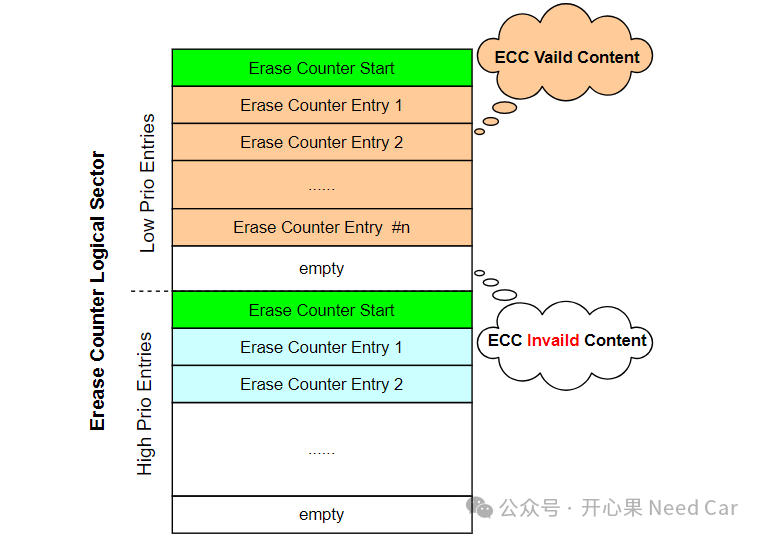
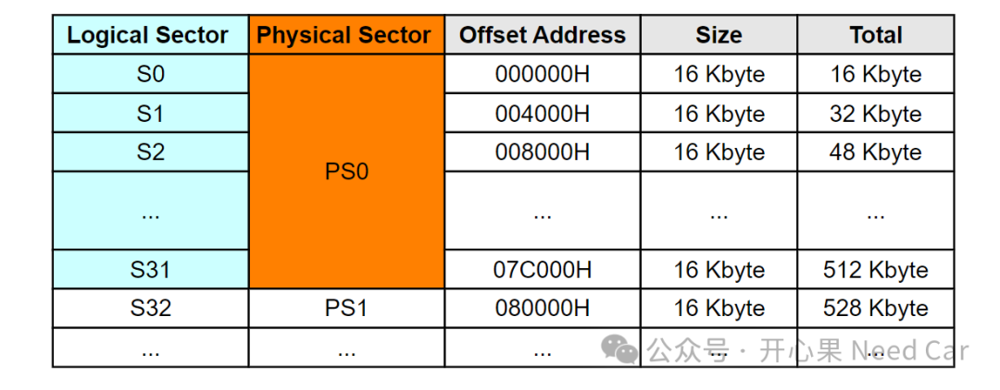
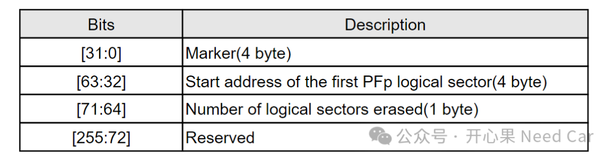
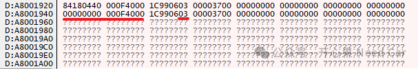

开心果 Need Car · 2024-07-03T06:55:00+08:00 · 微信原文
1、什么是EC
2、EC结构及log

注意：每个部分的第一个记录entry，Marker != 0，记录的信息为空，仅作为查找擦除事件信息的入口。
（一）物理扇区和逻辑扇区关系
一个物理扇区（Physical Sector）可以包含多个逻辑扇区（Logical Sector），本文：一个物理扇区对应32个逻辑扇区（总大小为512 Kbyte），每个逻辑扇区的大小为16 Kbyte，示意如下：

每次调用Flash的Erase命令时，NVM会自动地记录擦除逻辑扇区的起始地址和个数。记录的逻辑扇区起始地址是相对所选物理扇区的起始地址。更多内存信息可以参考前文《这些芯片内存（Memory）区，你真的用过？》。
（二）EC的记录格式
既然要记录逻辑扇区擦除事件信息，就需要一定的记录格式。每个entry使用256bit（32 byte）记录信息，每个entry恰好对应一个PFlash Page（最小写单位），具体格式定义如下：


上图示例中，执行了两次擦除动作，每次擦除3个Logical Sector，擦除起始地址0xF4000（相对地址）。
注意：Flash Driver对PFlash操作时，擦除操作受到Safety Endinit功能保护，需要先解除保护，在进行擦除操作，对应示例代码如下：
/* Flash Operation */{/* Get the current password of the Safety WatchDog module */uint16 endInitSafetyPassword = IfxScuWdt_getSafetyWatchdogPasswordInline();/* Erase the sector */IfxScuWdt_clearSafetyEndinitInline(endInitSafetyPassword);IfxFlash_eraseMultipleSectors(0xA00F4000, 3);IfxScuWdt_setSafetyEndinitInline(endInitSafetyPassword);}
有些朋友可能觉得：实际工程中，没感觉EC有啥用处。但是，EC这种记录信息的方式很值得学习和运用。
往期精彩回顾